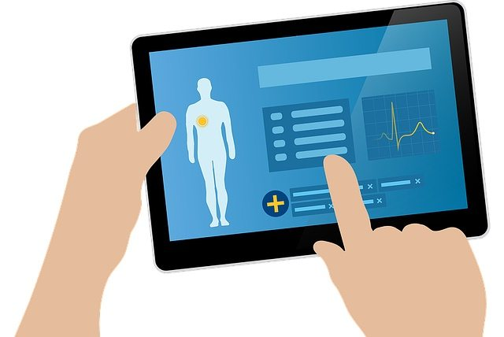

Telemedicina
Autor: Carolina de Jesús Guerra Martínez

Definición:
La telemedicina es una herramienta cada vez más importante en el campo de la salud. Gracias a su capacidad de conectar a médicos y pacientes a través de la tecnología, la telemedicina está revolucionando la forma en que se presta atención médica y brindando a las personas acceso a cuidados de calidad desde la comodidad de sus hogares.